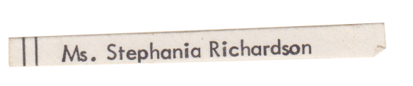
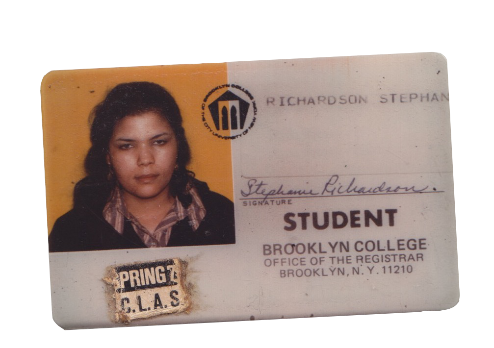

Grammy's House
Info
Stephania Hassan —neé Stephanie Louise Richardson— (b. April 14, 1947) is an artist, former social worker, small business owner, and retired special education teacher. She lived in New York City for most of her life, before relocating to Cairo, Egypt in 2018 with her husband Mohammed. She left a box of photos and printed ephemera that she made and/or collected over the years. Kyle Richardson, Hassan's granddaughter, is an artist and graphic designer. She compiled this digital archive of the contents in that box as an ode to her grandmother and the city that raised them. Use the floorplan to navigate around the archive.
  